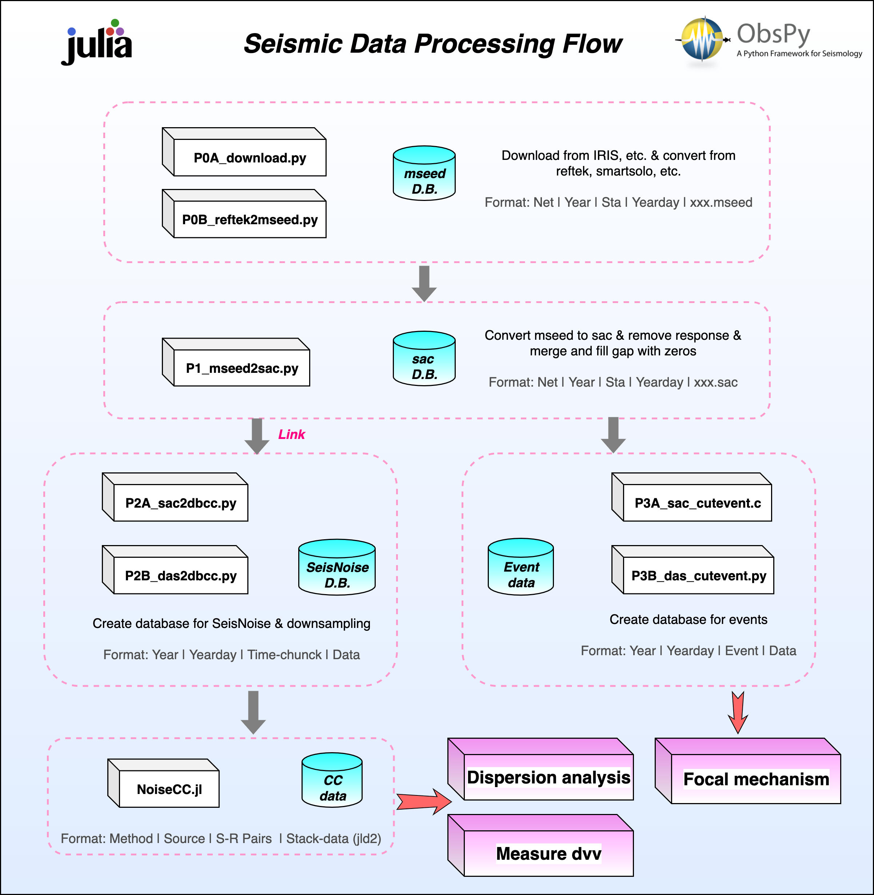

Prepare database
Before using NoiseCC.jl, you should prepare the database. Make sure the name of the file contains the exact network, station and component information. The following figure shows the format of other paths in the database.
- Format: Year | Yearday | Time-Chunck | Data(sac/mseed)

Processing flow

CC flow